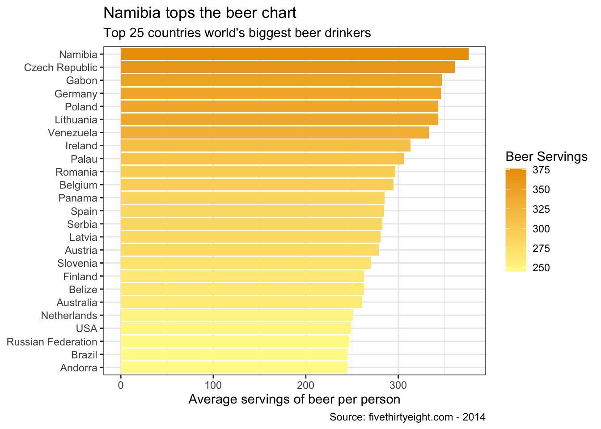
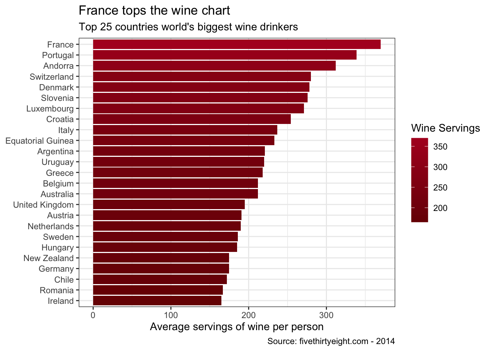
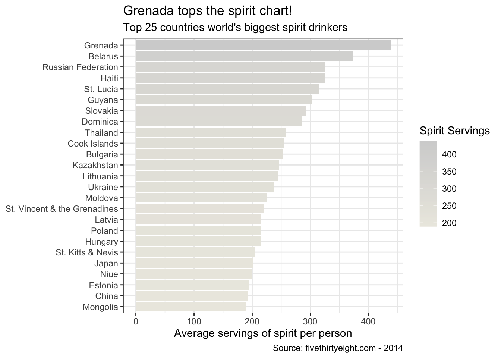
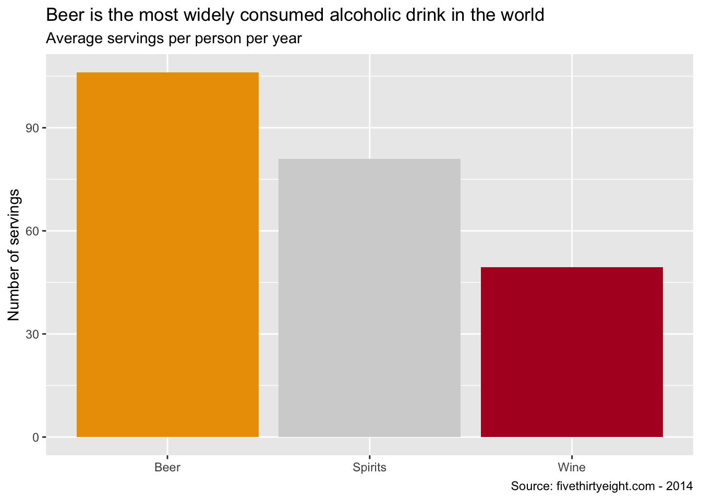

library(tidyverse) # Load ggplot2, dplyr, and all the other tidyverse packages## ── Attaching packages ────────────────────────────────────────────────────────────────────────── tidyverse 1.3.0.9000 ──## ✓ ggplot2 3.3.2 ✓ purrr 0.3.4
## ✓ tibble 3.0.3 ✓ dplyr 1.0.2
## ✓ tidyr 1.1.2 ✓ stringr 1.4.0
## ✓ readr 1.4.0 ✓ forcats 0.5.0## ── Conflicts ────────────────────────────────────────────────────────────────────────────────── tidyverse_conflicts() ──
## x dplyr::filter() masks stats::filter()
## x dplyr::lag() masks stats::lag()library(mosaic)## Registered S3 method overwritten by 'mosaic':
## method from
## fortify.SpatialPolygonsDataFrame ggplot2##
## The 'mosaic' package masks several functions from core packages in order to add
## additional features. The original behavior of these functions should not be affected by this.##
## Attaching package: 'mosaic'## The following object is masked from 'package:Matrix':
##
## mean## The following objects are masked from 'package:dplyr':
##
## count, do, tally## The following object is masked from 'package:purrr':
##
## cross## The following object is masked from 'package:ggplot2':
##
## stat## The following objects are masked from 'package:stats':
##
## binom.test, cor, cor.test, cov, fivenum, IQR, median, prop.test,
## quantile, sd, t.test, var## The following objects are masked from 'package:base':
##
## max, mean, min, prod, range, sample, sumlibrary(ggthemes)##
## Attaching package: 'ggthemes'## The following object is masked from 'package:mosaic':
##
## theme_maplibrary(lubridate)##
## Attaching package: 'lubridate'## The following objects are masked from 'package:base':
##
## date, intersect, setdiff, unionlibrary(fivethirtyeight)
library(here)## here() starts at /Users/raphaelnahoum/Desktop/London Business School/Core courses/Data Analytics for Finance/mywesbite10library(skimr)##
## Attaching package: 'skimr'## The following object is masked from 'package:mosaic':
##
## n_missinglibrary(janitor)##
## Attaching package: 'janitor'## The following objects are masked from 'package:stats':
##
## chisq.test, fisher.testlibrary(vroom)
library(tidyquant)## Loading required package: PerformanceAnalytics## Loading required package: xts## Loading required package: zoo##
## Attaching package: 'zoo'## The following objects are masked from 'package:base':
##
## as.Date, as.Date.numeric##
## Attaching package: 'xts'## The following objects are masked from 'package:dplyr':
##
## first, last##
## Attaching package: 'PerformanceAnalytics'## The following object is masked from 'package:graphics':
##
## legend## Loading required package: quantmod## Loading required package: TTR## Registered S3 method overwritten by 'quantmod':
## method from
## as.zoo.data.frame zoo## Version 0.4-0 included new data defaults. See ?getSymbols.## ══ Need to Learn tidyquant? ════════════════════════════════════════════════════════════════════════════════════════════
## Business Science offers a 1-hour course - Learning Lab #9: Performance Analysis & Portfolio Optimization with tidyquant!
## </> Learn more at: https://university.business-science.io/p/learning-labs-pro </>library(rvest) # scrape websites## Loading required package: xml2##
## Attaching package: 'rvest'## The following object is masked from 'package:purrr':
##
## pluck## The following object is masked from 'package:readr':
##
## guess_encodinglibrary(purrr)
library(lubridate) #to handle datesWhere Do People Drink The Most Beer, Wine And Spirits?
library(fivethirtyeight)
data(drinks)
# or download directly
# alcohol_direct <- read_csv("https://raw.githubusercontent.com/fivethirtyeight/data/master/alcohol-consumption/drinks.csv")What are the variable types? Any missing values we should worry about?
glimpse(drinks)## Rows: 193
## Columns: 5
## $ country <chr> "Afghanistan", "Albania", "Algeria", "An…
## $ beer_servings <int> 0, 89, 25, 245, 217, 102, 193, 21, 261, …
## $ spirit_servings <int> 0, 132, 0, 138, 57, 128, 25, 179, 72, 75…
## $ wine_servings <int> 0, 54, 14, 312, 45, 45, 221, 11, 212, 19…
## $ total_litres_of_pure_alcohol <dbl> 0.0, 4.9, 0.7, 12.4, 5.9, 4.9, 8.3, 3.8,…skim(drinks)| Name | drinks |
| Number of rows | 193 |
| Number of columns | 5 |
| _______________________ | |
| Column type frequency: | |
| character | 1 |
| numeric | 4 |
| ________________________ | |
| Group variables | None |
Variable type: character
| skim_variable | n_missing | complete_rate | min | max | empty | n_unique | whitespace |
|---|---|---|---|---|---|---|---|
| country | 0 | 1 | 3 | 28 | 0 | 193 | 0 |
Variable type: numeric
| skim_variable | n_missing | complete_rate | mean | sd | p0 | p25 | p50 | p75 | p100 | hist |
|---|---|---|---|---|---|---|---|---|---|---|
| beer_servings | 0 | 1 | 106.16 | 101.14 | 0 | 20.0 | 76.0 | 188.0 | 376.0 | ▇▃▂▂▁ |
| spirit_servings | 0 | 1 | 80.99 | 88.28 | 0 | 4.0 | 56.0 | 128.0 | 438.0 | ▇▃▂▁▁ |
| wine_servings | 0 | 1 | 49.45 | 79.70 | 0 | 1.0 | 8.0 | 59.0 | 370.0 | ▇▁▁▁▁ |
| total_litres_of_pure_alcohol | 0 | 1 | 4.72 | 3.77 | 0 | 1.3 | 4.2 | 7.2 | 14.4 | ▇▃▅▃▁ |
# There are no missing variablesMake a plot that shows the top 25 beer consuming countries
beer_plot <- drinks %>%
select(beer_servings,country) %>%
arrange(desc(beer_servings)) %>%
head(25)
glimpse(beer_plot)## Rows: 25
## Columns: 2
## $ beer_servings <int> 376, 361, 347, 346, 343, 343, 333, 313, 306, 297, 295, …
## $ country <chr> "Namibia", "Czech Republic", "Gabon", "Germany", "Lithu…p <- ggplot(beer_plot, aes (x=beer_servings, y=reorder(country, beer_servings), fill=beer_servings)) +
geom_col() +
theme_bw()+
scale_fill_gradient(low="#FFF897", # This function manually adds a gradient to the fill variable.
high="#EC9D00") + # The codes are the hex colour codes for beer
labs(title = "Namibia tops the beer chart", # add labels to the df
subtitle = "Top 25 countries world's biggest beer drinkers",
caption = "Source: fivethirtyeight.com - 2014", # Source
fill = "Beer Servings" # Change legend name
) +
ylab(NULL) +
xlab("Average servings of beer per person") # y-axis
p
Make a plot that shows the top 25 wine consuming countries
wine_plot <- drinks %>%
select(wine_servings,country) %>%
arrange(desc(wine_servings)) %>%
head(25)
glimpse(wine_plot)## Rows: 25
## Columns: 2
## $ wine_servings <int> 370, 339, 312, 280, 278, 276, 271, 254, 237, 233, 221, …
## $ country <chr> "France", "Portugal", "Andorra", "Switzerland", "Denmar…p2 <- ggplot(wine_plot, aes (x=wine_servings, y=reorder(country, wine_servings), fill=wine_servings)) +
geom_col()+
theme_bw()+
scale_fill_gradient(low="#790D03", #gradient to the fill variable
high="#B21226") + # colour codes for wine
labs(title = "France tops the wine chart",
subtitle = "Top 25 countries world's biggest wine drinkers",
caption = "Source: fivethirtyeight.com - 2014", # Source
fill = "Wine Servings")+
ylab(NULL) +
xlab("Average servings of wine per person")
print(p2)
Finally, make a plot that shows the top 25 spirit consuming countries
spirit_plot <- drinks %>%
select(spirit_servings,country) %>%
arrange(desc(spirit_servings)) %>%
head(25)
glimpse(spirit_plot)## Rows: 25
## Columns: 2
## $ spirit_servings <int> 438, 373, 326, 326, 315, 302, 293, 286, 258, 254, 252…
## $ country <chr> "Grenada", "Belarus", "Haiti", "Russian Federation", …plot3 <- ggplot(spirit_plot, aes (x=spirit_servings, y=reorder(country, spirit_servings), fill=spirit_servings)) +
geom_col() +
theme_bw()+
scale_fill_gradient(low="#ECEAE2",
high="#D3D3D3") + # colour codes for spirit
labs(title = "Grenada tops the spirit chart!",
subtitle = "Top 25 countries world's biggest spirit drinkers",
caption = "Source: fivethirtyeight.com - 2014",
fill = "Spirit Servings"
) +
ylab(NULL) +
xlab("Average servings of spirit per person")
plot3
Now that we have a breakdown of biggest beer, wine and spirit drinking countries, it would be interesting to look at what drink is consumed the most on average across the globe.
drinks %>%
summarise(Beer = mean(beer_servings),
Wine = mean(wine_servings),
Spirits = mean(spirit_servings)) %>%
#get table into tidy format
pivot_longer(c(Beer, Wine, Spirits), names_to ="categories") %>%
#bar plot
ggplot(aes(x = categories, y = value, fill = categories)) +
geom_col() +
#costum color
scale_fill_manual(values = c("#EC9D00","#D3D3D3","#B21226"), labels=c("Beer", "Spirits", "Wine")) +
#titles
labs(title = "Beer is the most widely consumed alcoholic drink in the world",
subtitles = "Average servings per person per year",
caption = "Source: fivethirtyeight.com - 2014",
y = "Number of servings",
x = NULL) +
#remove legend
theme(legend.position = "none") From this graph, it can be inferred that beer is the most widely consumed alcoholic drink in the world, followed by spirits and wine. Given that beer has a lower alcohol content in comparison to both spirits and wine, it can be consumed on a more regular basis. Additionally, beer is the cheapest alternative by far - wine especially tend to be a lot more expensive.
It would be interesting to plot a graph showing how beer perform in comparison to water, coffe and tea.